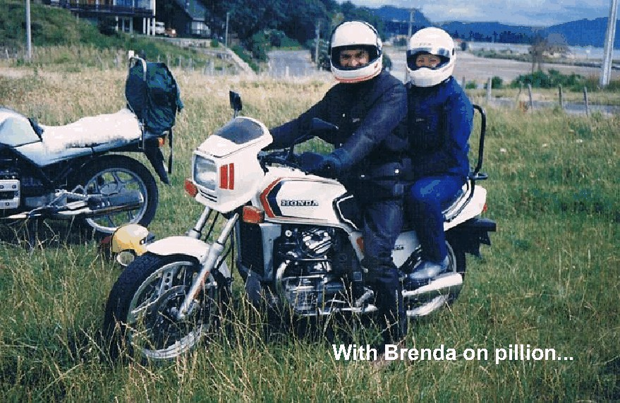
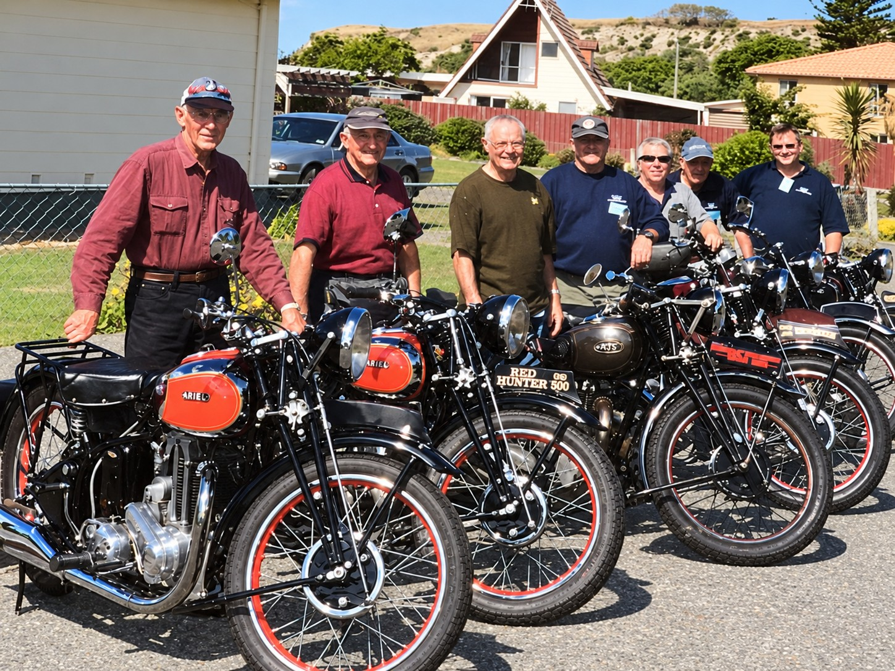
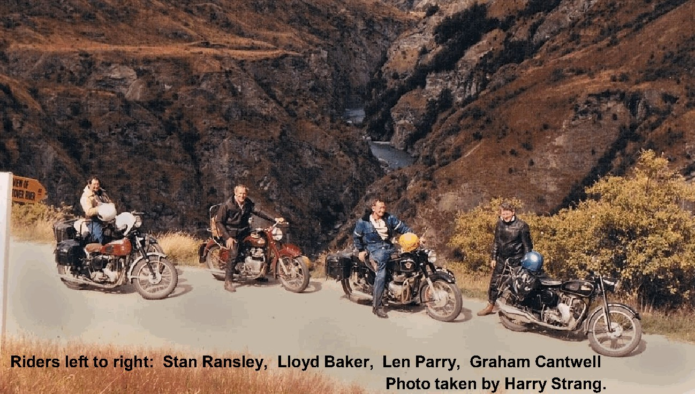
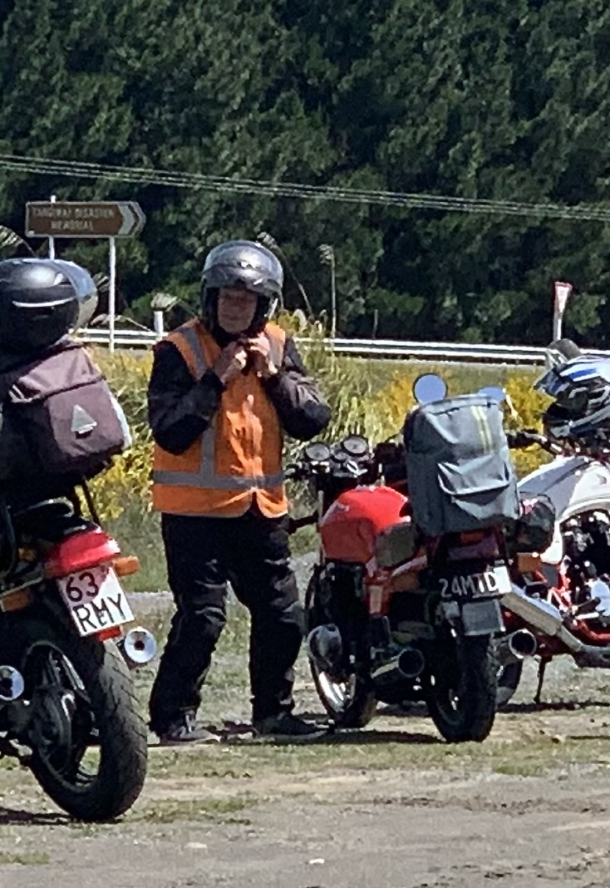
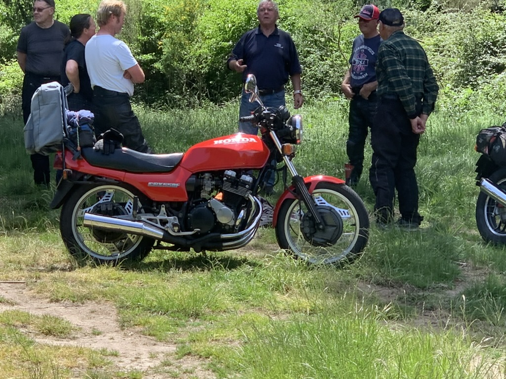

At fifteen, Lloyd Baker bought a Harley-Davidson for £40. It took him beyond Taranaki for the first time. Decades later, the motorcycles had changed, but the pleasure of riding — and the people who shared it — still ran through his life.
In the October 2017 club newsletter, Lloyd looked back on that life in his own words. The story begins with a loan from his older brother and unfolds through marriage, family, restoration and journeys across New Zealand and Australia.
The Harley that opened the world
It was 1943 when Lloyd acquired his first motorcycle, a 1930 5-6 Harley-Davidson. His older brother Lester lent him the £40 purchase price. Lester already owned three Harleys, so there was encouragement close at hand.
Until then, Lloyd had never been outside Taranaki. He and Lester rode to Auckland, each on a 5-6 Harley. The journey gave him a new reach: places that had once been beyond his experience could now be reached on two wheels.
“This bike opened the world to me.”
There was some competition too. In his early New Plymouth days Lloyd tried hill climbing. He remembered Lester as the more successful competitor, recalling his brother’s win at the Ngamotou beach race ahead of riders including Rod Coleman.
Brenda and the engagement ring
Lloyd met Brenda when he was eighteen. She soon became, in his description, an expert pillion passenger. Among their early journeys was a ride to Whanganui and back on the Harley.
At twenty he sold the motorcycle for £70 to buy her engagement ring. They married when he was twenty-one. Looking back in 2017, he described a long relationship he had never regretted. Motorcycling paused for a while as family life took its place.
Children, the move from New Plymouth to Matamata, businesses and house building made it difficult for him to put a simple total on his riding years. Yet Brenda remained part of the motorcycle story. Much later, when they rode Skippers Canyon on a modern bike, he remembered her confidence in him: she never expressed fear or asked him to turn back.

A return to two wheels
BSAs, Royal Enfields, Ariels and other machines featured in the years that followed. By 2017 Lloyd could look back on thirty-eight years of continuous riding. The first motorcycle he restored was a 1956 Royal Enfield 500 twin, and he put it to use touring the South Island with fellow club members.
Lloyd believed Harry Strang had introduced him to the Tauranga Classic Motorcycle Club, although he was careful not to claim an exact joining date. His first annual rally was at Katikati Hot Springs, which he recalled as roughly thirty years before the interview.
He found it hard to part with motorcycles. His 2017 collection included Ariel 500 OHV singles from 1930 to 1954, a 1955 650 Huntmaster and a 1958 Square Four under restoration, alongside a Velocette and a Honda CBX550 Four. These are the machines he listed then, rather than a claim about the collection today.

The roads less travelled
The Royal Enfield restoration became the beginning of another chapter on the road. Lloyd and his companions rode the Haast, Arthur’s and Lewis passes. Around Queenstown they tackled Skippers Canyon, an experience he remembered warmly and repeated on two or three occasions.

By the time of the interview he had toured the South Island at least five times. One of those journeys was on the 1939 Ariel, with girder forks and a rigid frame. The machine was more than a restoration to admire: it was a motorcycle on which he travelled.
Australia brought a different scale of adventure. Five club members, some accompanied by their wives, were hosted by motorcyclists in Brisbane. On a mixture of their own and borrowed bikes, the group travelled from Brisbane to Adelaide and then north to Coober Pedy and Alice Springs.
Lloyd bought a BMW K75 for that trip. Afterwards he airfreighted it home and kept it for several years. Closer to home, he remembered two rides to Cape Reinga, returning via Ninety Mile Beach. His brother Keith joined him on one of them.
Lloyd offering a lift to Rastus

Still riding
The cover of the October 2017 newsletter identifies Lloyd as a life member and shows him riding his 1939 Ariel Red Hunter on the Hawkes Bay Classic Club’s Taupo–Napier Mail Run earlier that year. It is a fitting companion to the photograph of the teenager on his Harley: two moments in a riding life separated by many decades.
Asked about his best and worst rides, Lloyd resisted dismissing any ride as the worst. Each had good features; the difficult parts often came down to unsuitable clothing and exposure to cold and wet. His best rides, he felt, could fill a book.
Across the Gentle Annie in 2019
Two years after that newsletter profile, Lloyd was still out on the road. Club members remember him riding his trusty Honda across the Gentle Annie Road from Taihape to Napier in 2019. These photographs carry his story forward from the 2017 interview: Lloyd beside his motorcycle, the Honda at a roadside stop, and the company that made a ride more than the journey alone.


Good company along the way
Lloyd is remembered by club members as someone who enjoyed socialising. The shared stops and time together were part of the pleasure of club life, alongside the motorcycles and the miles. These photographs show that familiar side of Lloyd: relaxing at a table, enjoying a drink and conversation with friends.
There was life beyond motorcycles too: fishing, surfcasting, whitebaiting and trout fishing; fruit trees, grafting and experiments with persimmons and bananas; and golf, which he modestly said he never played very successfully.
His advice to anyone considering classic motorcycles was to get involved. The people mattered, and restoring a machine offered its own reward: the more work put into it, the greater the pride in ownership.
At the end of his profile, Lloyd expressed gratitude that he was still riding in his mature years, and hoped it would continue for a while yet. The pleasure that began with the Harley was still there.